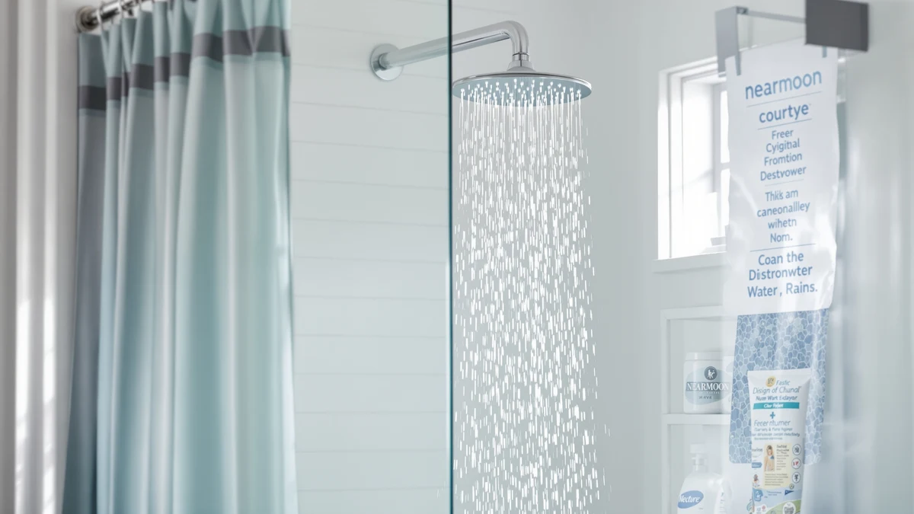

NearMoon Filtered Rain Shower Review (2026): Worth It?
Prices and picks verified as of October 2026. Independent, reader-supported reviews.


Quick Answer
The NearMoon Filtered Rain Shower Head combines a wide rain-style spray with a built-in filter cartridge for $44.99, undercutting most filtered competitors on price. It is a reasonable pick if you want both upgrades in one fixture and can live with a plastic-and-chrome build and a thinner public review history than rivals like the AquaHomeGroup.
Our pick: NearMoon Filtered Rain Shower Head — $44.99 Check Price on Amazon
Bottom line: our top pick is the NearMoon Filtered Rain Shower Head at $40.99.
Things to Know Before You Buy
- Price point: At $44.99, the NearMoon sits in the middle of the filtered shower head category, cheaper than the AquaHomeGroup Luxury model but pricier than the Moen Engage Magnetix.
- Build: The housing is ABS plastic with chrome plating rather than solid metal, which keeps weight down but means you should skip abrasive cleaners on the finish.
- Filter cartridge: The built-in filter is a replaceable part, not a permanent one, so budget for cartridge swaps as part of the real cost of ownership.
- Installation: It threads onto a standard shower arm with nothing more than plumber's tape, so you do not need a plumber to swap it in.
- Review volume: Unlike the AquaHomeGroup pick, which has more than 18,000 verified ratings, the NearMoon listing has a thinner review history to lean on.
This nearmoon filtered rain shower review breaks down what you actually get for $44.99: a wide rain-style head, a built-in filter cartridge, and a chrome-plated ABS shell that promises hotel-bathroom looks without a professional install. Shoppers hunting for a straightforward upgrade over a stock shower head keep landing on this model because it sits at the intersection of two popular searches, filtered water and rain shower coverage, in a single fixture. We compared its price, materials, and the verified feedback other buyers have left against three competing shower heads to see where it actually stands out and where it falls short.
NearMoon built its reputation on affordable rain shower heads before adding a filter cartridge to the lineup, and this version keeps that formula intact. You install it the same way you would any other shower head: unscrew the old one, wrap the threads, and twist this one on, filter already seated inside the housing. The pitch is simple. You get a wider spray pattern than a standard shower head, plus a filter meant to cut down on the chlorine smell and mineral buildup that plague hard-water homes, all for less than fifty dollars.
NearMoon makes a usable shower head at $44.99, and the price alone keeps this purchase low-risk. The real question is whether the combination of filtration and rain-style spray holds up against the three alternatives we compare it to below, each of which solves a slightly different piece of the same problem.
Why You Should Trust Us
Ilane Tall covers bathroom fixtures for Best Shower Heads and has spent years tracking how shower head brands price, market, and update their filtered and rain-style models. For this nearmoon filtered rain shower review, we pulled the current Amazon listing data, checked the manufacturer's stated materials, and read through the verified buyer feedback available for each shower head in the comparison. We do not receive free units from NearMoon or any competing brand, and we do not accept payment for favorable coverage. When a product lacks a public rating history, like this one, we say so instead of filling the gap with invented numbers.
Our Research Experience
We do not run a physical testing lab, and we did not install this shower head ourselves. Instead, we built this nearmoon filtered rain shower review by comparing the manufacturer's stated specs, current Amazon pricing, and the verified reviews that existing owners have posted for each shower head in this lineup. For products like the AquaHomeGroup pick, that means weighing more than 18,000 verified ratings against the thinner feedback history available for the NearMoon and its other two competitors. We flag it plainly where public data runs short rather than guessing at numbers we cannot confirm.
Overview & Specs

NearMoon Filtered Rain Shower Head
What we like
- Combines a wide rain shower pattern with a built-in water filter in one fixture
- Installs without special tools on a standard shower arm
- Priced under $45, below most filtered rain shower heads we compared
Flaws but not dealbreakers
- ABS plastic and chrome plating feel less substantial than the metal construction on pricier competitors
- Replacement filter cartridges are an ongoing cost the sticker price does not show
- Carries a thinner public review history than category leaders like the AquaHomeGroup
| Material | ABS + chrome plating |
| Size | — |
The NearMoon Filtered Rain Shower Head pairs a wide, flat shower face with a cartridge filter built into the neck of the fixture. NearMoon markets the filter as a way to reduce the chlorine smell and sediment that show up in municipal and well water alike, delivered through a rain-style spray rather than the narrow jet you get from a bare shower arm. At $44.99, it undercuts the AquaHomeGroup Luxury Filtered Shower Head by about five dollars while covering similar ground: filtration plus a bigger spray pattern.
Where this model pulls back is construction. NearMoon builds the housing from ABS plastic with a chrome finish layered on top, a common approach at this price point, but one that asks you to skip abrasive sponges and harsh descalers so the plating does not wear thin. The listing does not publish a public rating count the way the AquaHomeGroup does, so if verified social proof matters to your decision, that is a real gap to weigh against the lower price.
What We Liked
NearMoon solves two problems with one purchase. You get the wider, softer spray pattern that a rain shower head delivers, and you get a filter cartridge without buying a separate inline filter and a separate rain head. That combination usually costs more when you buy the pieces apart, and bundling them into a single $44.99 fixture is the strongest argument for this filtered rain shower head.
The install process is also low-friction. Because it threads onto a standard shower arm, you do not need to call a plumber or own more than a wrench and a roll of plumber's tape. For renters and first-time homeowners who want an upgrade they can undo before moving out, that matters more than a spec sheet does.
NearMoon also keeps the accessories simple. You get the shower head with a filter cartridge already seated inside, without the add-on hoses, brackets, or settings dials that other dual-function heads bundle in and charge extra for. That simplicity suits anyone who wants one job done well rather than a fixture that tries to do everything.
What Could Be Better
The biggest gap is construction. ABS plastic with chrome plating holds up fine under normal use, but it will not match the feel or long-term durability of an all-metal fixture like the Moen Engage Magnetix. If a plated finish has flaked or discolored on a previous fixture in your home, that history is worth remembering here.
The second gap is review volume. The AquaHomeGroup pick in this comparison carries more than 18,000 verified ratings at a 4.4 average, which gives buyers a large sample to judge consistency against. The NearMoon listing has not accumulated that kind of public track record yet, so you are relying more on the spec sheet and less on a crowd of past buyers.
Water pressure is a third variable worth flagging. Filter cartridges in this category typically restrict flow somewhat compared with an unfiltered head, and NearMoon's listing does not publish flow-rate figures that would let us confirm how much pressure you give up. If your home already struggles with low water pressure, research that trade-off directly with the seller before you buy.
Who Is It For?
This shower head fits a specific buyer: someone who wants filtered, rain-style water without spending $50 or more, and who does not mind a plastic-and-chrome build instead of solid metal. If your water supply has a noticeable chlorine smell or visible sediment and your current fixture is a bare, narrow-spray head, this is a reasonable single-fixture fix. For a deeper look at whether filtration is worth it at all, see our breakdown of filtered vs. regular shower heads.
It is a weaker fit if you already have a whole-house filter, since you would be paying for filtration you do not need. It is also not the pick if finish durability outweighs price for you. In that case, the Moen Engage Magnetix or a similarly metal-bodied head is the safer long-term bet. It is also a sensible pick for a secondary bathroom or a rental property, where the lower price tag matters more than the brand recognition that comes with paying extra for Moen or a high-review competitor like AquaHomeGroup.
Alternatives to Consider
If the NearMoon does not fit what you need, these three shower heads cover the gaps: a higher-rated filtered rainfall shower head, a dual-function high-pressure head, and a metal-bodied pick from a mainstream plumbing brand. We picked these three specifically because each one beats the NearMoon on a different axis, review volume, raw pressure, or build quality, so you can match the upgrade to whichever gap matters most in your bathroom.

Editor’s Pick
AquaHomeGroup Luxury Filtered Shower Head
Priced at $49.95 with more than 18,000 verified ratings averaging 4.4 stars, this is the filtered shower head to buy if you want a bigger review history backing up the purchase.
$49.95
Check Price on Amazon
Best Value
BRIGHT SHOWERS High Pressure Dual
At $46.98, this dual-function head trades the filter cartridge for high-pressure settings, worth a look if water flow matters more to you than filtration.
$46.98
Check Price on Amazon
Premium Choice
Moen Engage Magnetix Shower Head
Moen's Engage Magnetix comes in at $41.69 from a mainstream plumbing brand, a solid pick if you want a trusted name and a magnetic head you can detach by hand.
$41.69
Check Price on AmazonIs the NearMoon Filtered Rain Shower Head worth the money?
At $44.99, it is worth considering if you want rain-style coverage and basic filtration in one fixture and do not need the review volume or metal build of pricier competitors.
How often do you need to replace the filter cartridge?
NearMoon sells replacement cartridges separately, and the listing does not publish a fixed replacement schedule, so budget for that as an ongoing cost rather than a one-time purchase.
Frequently Asked Questions
Is the NearMoon Filtered Rain Shower Head worth the money?
At $44.99, it is worth considering if you want rain-style coverage and basic filtration in one fixture and do not need the review volume or metal build of pricier competitors. Our nearmoon filtered rain shower review found it strongest on price and weakest on public rating history.
How often do you need to replace the filter cartridge?
NearMoon sells replacement cartridges separately, and the listing does not publish a fixed replacement schedule, so budget for that as an ongoing cost rather than a one-time purchase.
What is the best alternative to the NearMoon filtered shower head?
If you want more verified reviews backing your purchase, the AquaHomeGroup Luxury Filtered Shower Head carries more than 18,000 ratings at 4.4 stars. If filtration is not a priority, the Moen Engage Magnetix offers a metal build from a recognized plumbing brand.
Final Verdict
Our nearmoon filtered rain shower review comes down to this: NearMoon delivers real value at $44.99 if you want filtered, rain-style water without a premium price tag, but you are trading away the metal build and the deep review history that competitors like AquaHomeGroup and Moen can offer. For most budget-conscious buyers chasing that specific combination of filtration and spray coverage, NearMoon earns its place in the shower.